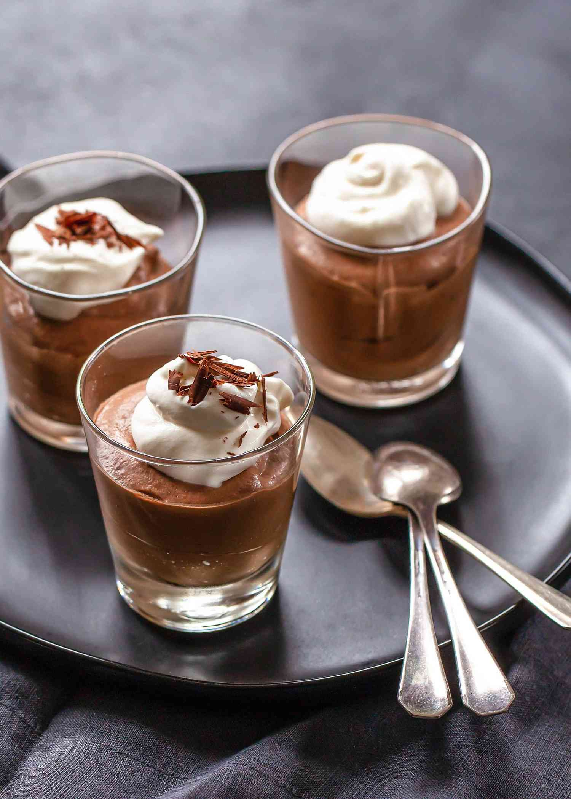

Chocolate Mousse

Description
This chocolate mousse recipe is super easy! All you need is a blender and a few ingredients.
Chocolate mousse is one of my favourite deserts ever, and while it was very popular in the
late 90's and early 00's, it fell out of fashion in 2010 onwards. It is now however, making
a resurgence!
Ingredients
- 1 cup semisweet chocolate chips
- 5 tablespoons boiling water
- 4 large eggs, separated, divided
Steps
- Place chocolate chips in a blender; pulse until ground. Add boiling water and blend until chocolate is melted. Add egg yolks, one at a time, blending well after each addition; transfer to a mixing bowl.
- Beat egg whites in a glass, metal, or ceramic bowl until stiff peaks form. Gently fold egg whites into chocolate mixture. Pour mousse into wine glasses or other serving glasses and chill in the refrigerator until set, 2 to 3 hours.